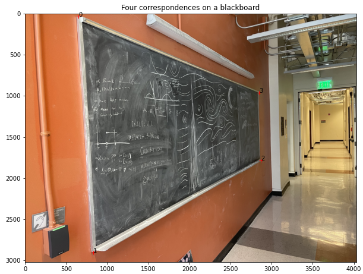
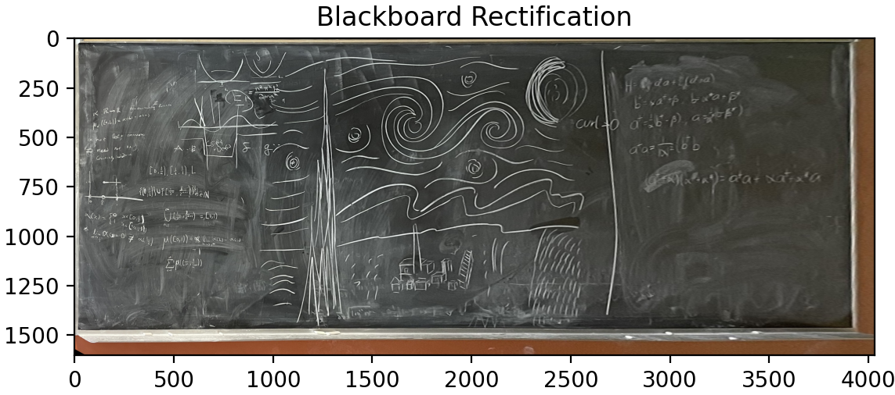
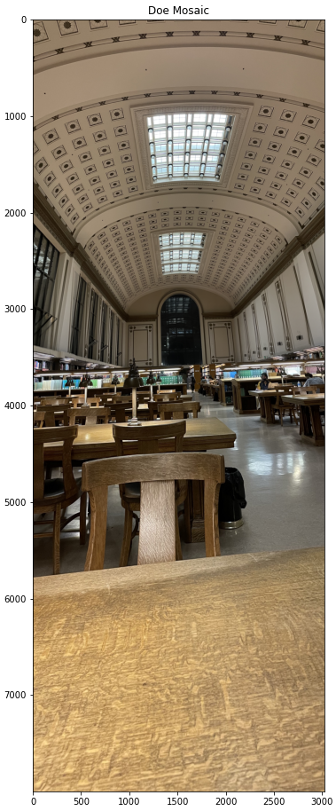
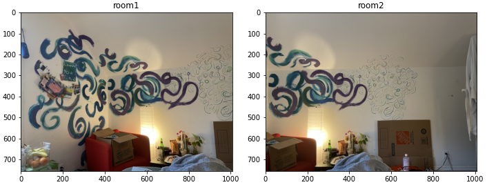
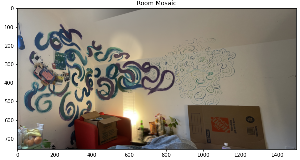
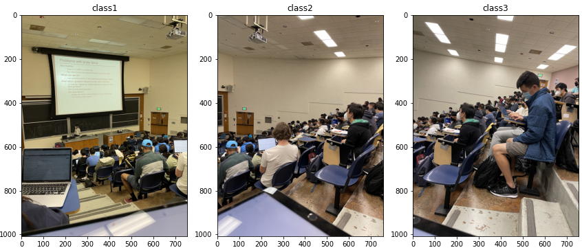
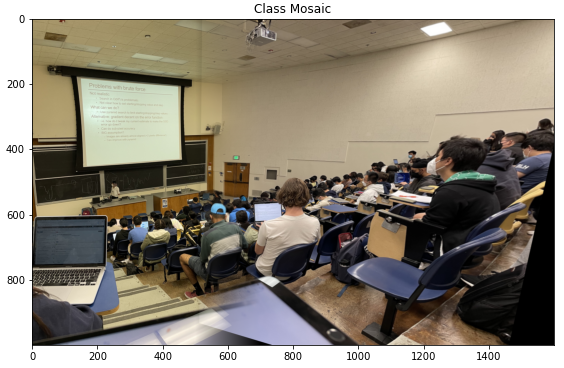
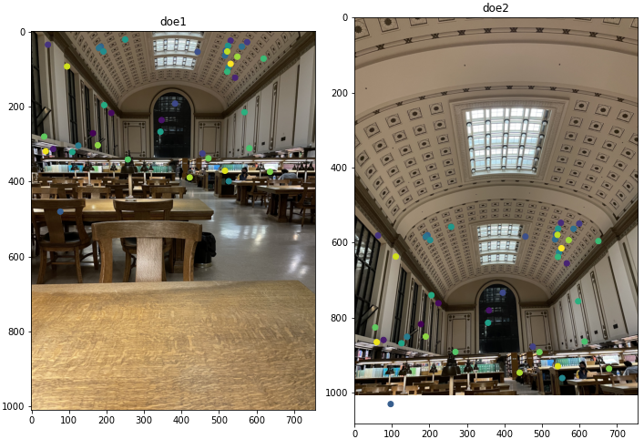
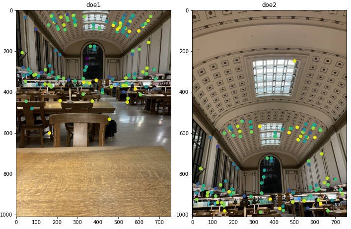

Eden McEwen
Project 4 Part A
Step A1: Shoot the Pictures
Below is an example of the images used in this project. The observer is in the same location, but looking up instead of head on. This leads to a change in perspective. Correspondences were selected similarly to the last project
Step A2: Recover Homographies
In this next step of the project, we recover homography matrix by solving a least squares problem:
The matrix that we were given in class can be solved with the following equations:
wx = ax + by + c
wy = dx + ey + f
w = gx + hy + 1then we can plug in to get:
x(gx + hy + 1) = ax + by + c
x= ax + by + c + gxx' - hyx' ]]doing a simular situation for y, the A matrix that we set up to solve Ah = p' where h = [ a, b, c, d, e, f, g, h] with a 1 appended after, looks something like:
[x, y, 1, 0, 0, 0, -xx', -yx'] = x'
[0, 0, 0, x, y, 1, -xy', -yy'] = y'for each or corresponding points. We then solve these system of equations using least squares, where the error squared from the solution is minimized. This can be solved direcly with exactly 4 correspondences.
Step A3: Warp the Images
Using the Homographies recovery developed in the previous step, I was able to inversely warp images to a given set of points. This kind of recovery worked best with sqares and rectangles, since I was able to estimate their ratios.
3 Image Rectification 1: Blackboard

Using our image warping we are now able to see the art on this blackboard!

This looks pretty similar to any head-on view, which you can't even get fully because it's partially hidden in a hallway!
3 Image Rectification 2: Hallway
For these rectifications, only four points were used because the given points were hand estimated, and worked better by just giving one set. If we were given more time, the H matrix could have been solved for with more.
This one is fairly disconcerting, and not how one would normally percieve a floor! This transformation was also very sensitive to how the correspondences were chosen, being a pixel or two off would put the hallway into an intense perspective.
Step A4: Blend the images into a mosaic
I chose to do a simple gradient of feathering in the overlapping regions of my mosaics. this is mainly because I was still getting to sharp a drop off with multiresolution blending, and didn't have time to implement a pyramid version for a smoother blend. Generally, this blend still worked well.
Mosaic 1: Doe
Everyone's favorite library! This is the student view. THis warp was fairly good, except for some distortions on the columns on the side. 8 correspondence points are used.

Mosaic 2: Mosaic
As I was helping my friend move out, I helped them take pictures of their murals! I wasn't able to get this wall in one image because until now. The structure in the mural itself helped resolve it in the blend.


Mosaic 3: Class
Oop. In the heat of the moment. I wasn't able to get the third picture to quite work! So I left it out. But I think that has more to do with my images than my code.


Project 4 Part B
Part B1: Detecting Harris corners
Here we use the given code to detect harris corners, We then, following the Brown paper, choose a set of points that are relatively well spaced from each other with ANMS, taking the optimization route of finding the minimum radius, and then taking the 500 largest.
Part B2 and B3: Extracting Feature Descriptor
We then create a set of features descriptors, from subsampling a 40x40 region around each image to an 8x8 descriptor, and then match them with the Russian Granny trick matched with the SSD:

We chose generally a cutoff lower than 0.7 for our cutoff, as that is where the Brown paper nots that the incorrect points start to outweigh the correct associations. We would like to have picked the peak at 0.1, but some of our matching wasn't good enough for that.
Part 4: RANSAC
We then follow the algorithm for RANSAC, iterating on order 10000 times with an epsilong cutoff of 10 to compute a robus homography. Here the features are matched, and then ported to the second image with the homography computed with RANSAC

Part 5: Mosaics
Here we recompute our mosaics from before, but now with Autostiching
Mosaic 1: Doe
Doe was challenging as it has a lot of repeating feautures that would often get confused. It took several tries with tuning parameters to get this one right.
First, the matched points:

This is our auto vs. hand rectified image:
Both rectifications struggles with the siding...
Mosaic 2: Mosaic
Suprisingly, this was the mosaic that worked the best. The murals my friend had painted lended themselves well for feature alignment.
First, the matched points:
This is our auto vs. hand rectified image:
Compared to the original mosaic, the space feels much more acurate in the perspective.
Mosaic 3: Class
This autostitching also did better than my original.
First, the matched points:
This is our auto vs. hand rectified image:
The homography is much more true to the details of my classmates. I'm very impressed!
What I have learned!
I honestly wsa very suprised at how easy it was for this algorithm to detect corners in various situations. I was not expecting the loops of my friend's mural to work better than the very linear structure of doe. I learned a lot about what an algorithm is interested in looking at. All in all, this was one of the most fascinating projects I have ever done, and I'm pretty proud of my work!